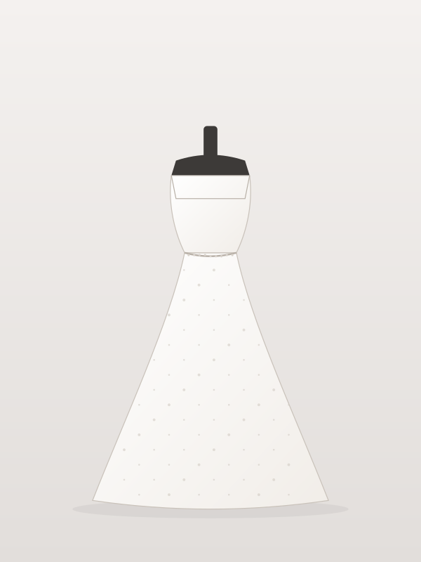
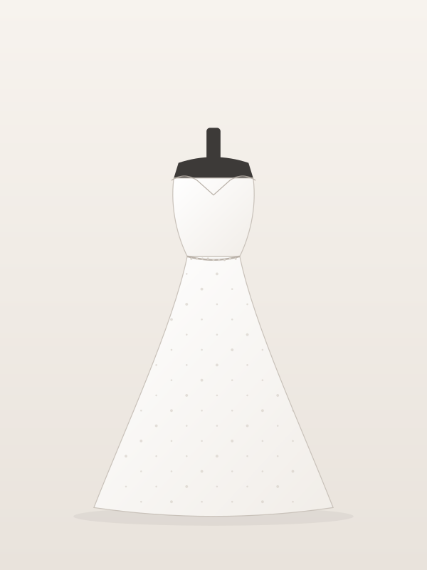
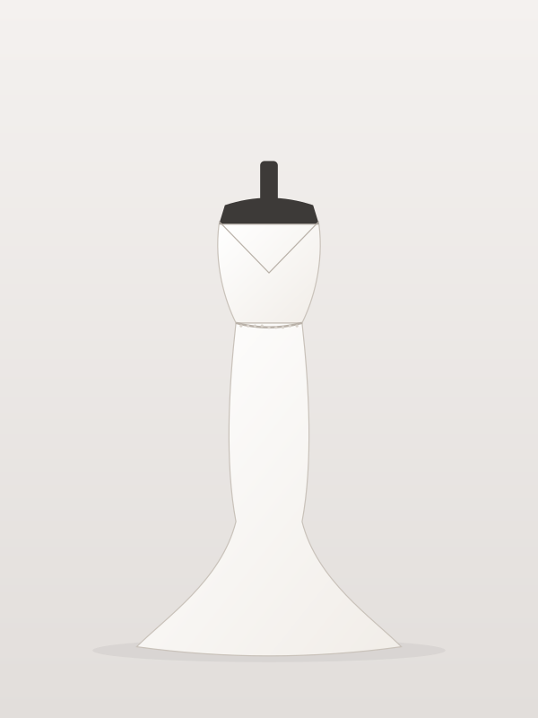
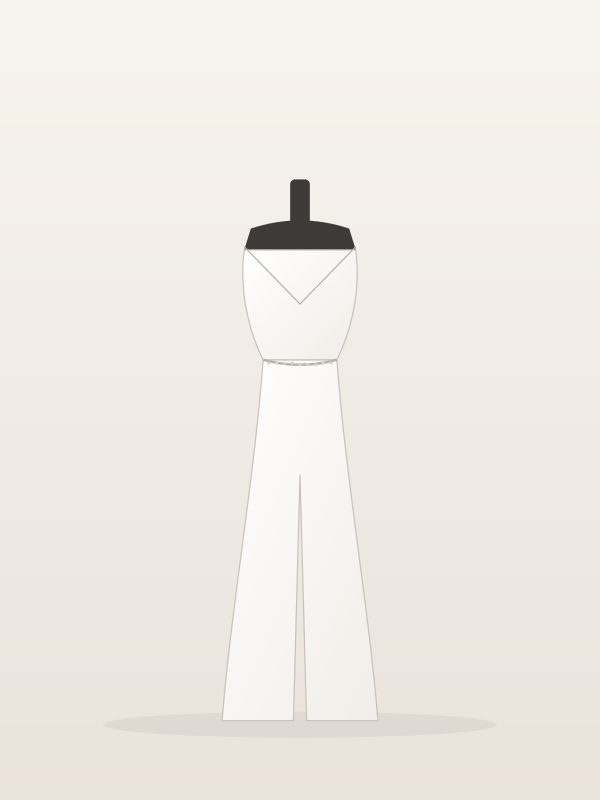
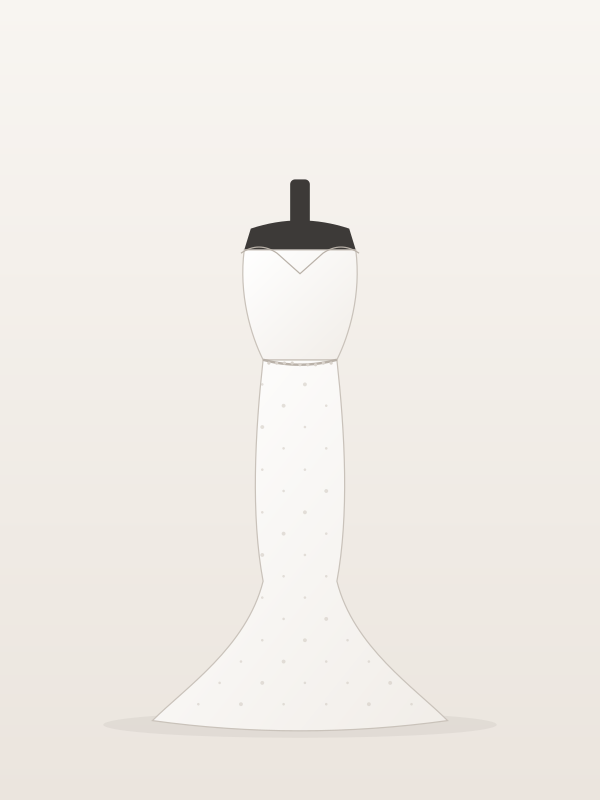
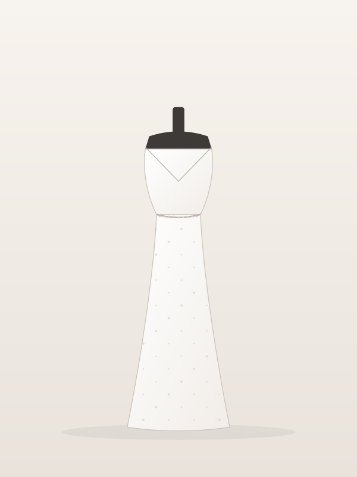

Autorska pracownia krawiecka · woj. lubelskie
Suknie ślubne szyte na miarę
Pokaż nam, o czym marzysz, a my to dla Ciebie uszyjemy.

Każda suknia
powstaje od nowa,
tylko dla Ciebie

O nas
Pracownia, w której Twoja wizja nabiera kształtu
Coccinelle to profesjonalna, autorska pracownia krawiecka. Nie sprzedajemy sukni z wieszaka – każdą projektujemy i szyjemy od podstaw, na wymiar konkretnej Panny Młodej.
Słuchamy, doradzamy w wyborze tkanin i fasonu, a potem krok po kroku, przymiarka po przymiarce, dopracowujemy każdy detal: koronkę, dekolt, długość trenu. Tak, by w dniu ślubu suknia leżała idealnie i była dokładnie taka, jak w Twoich marzeniach.
- Na miaręKrój dopasowany do Twojej sylwetki
- Autorski projektSuknia, której nie ma nikt inny
- Ręczna pracaPrecyzja i dbałość o detal
Nasze suknie
Uszyte z miłością
Kilka sukni, które powstały w naszej pracowni. Każda z nich była najpierw czyimś marzeniem.







Więcej realizacji na Instagramie @coccinellesuknieslubne
Making of
Jak powstaje Twoja suknia
Od pierwszej rozmowy do dnia ślubu jesteśmy z Tobą na każdym etapie.
- 01
Konsultacja
Opowiadasz nam o swoich marzeniach, pokazujesz inspiracje. Rozmawiamy o stylu, tkaninach i terminie.
- 02
Projekt
Przygotowujemy propozycję fasonu i dobieramy materiały: koronki, jedwabie, tiule, zdobienia.
- 03
Pomiar
Dokładnie zdejmujemy miarę, aby suknia była skrojona idealnie pod Twoją sylwetkę.
- 04
Przymiarki
Na kolejnych przymiarkach dopracowujemy każdy detal, aż wszystko będzie dokładnie takie, jak chcesz.
- 05
Odbiór
Odbierasz suknię gotową na najpiękniejszy dzień – uszytą tylko dla Ciebie.
„Pokaż nam, o czym marzysz,
a my to dla Ciebie uszyjemy.”
Wycena
Zapytaj o swoją suknię
Każda suknia jest inna, dlatego wycenę przygotowujemy indywidualnie. Napisz kilka słów o swoich planach, a odezwiemy się z propozycją terminu konsultacji.
- Indywidualna wycena
- Autorski projekt
- Szycie w całości na miarę
Kontakt
Zapraszamy do pracowni
Pracownia
[Adres pracowni – do uzupełnienia]
województwo lubelskie
Wizyty po wcześniejszym umówieniu
Telefon & e-mail
[+48 telefon – do uzupełnienia]
[e-mail – do uzupełnienia]